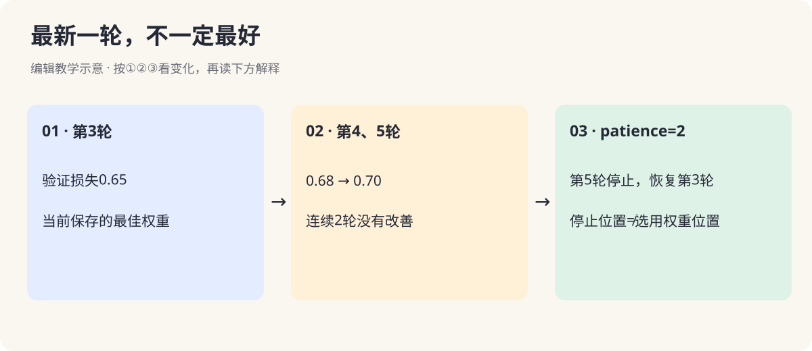
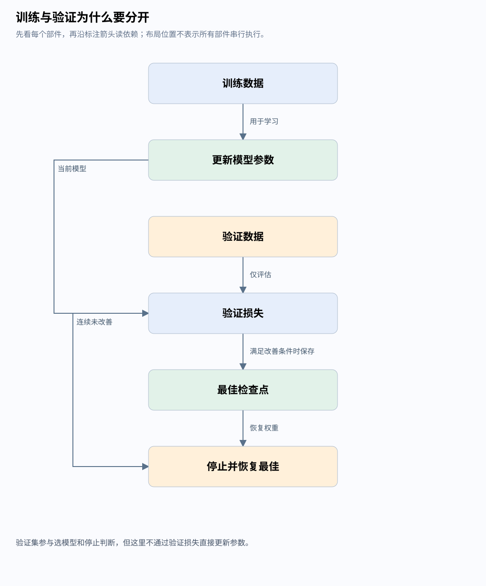

第5章 · 泛化、早停与Dropout
本章开篇生活情境与衔接为编辑教学改写，借鉴原视频从经历引出概念的讲解方法，不是作者原话；原视频线索与论文见下方对应段落。
先看一件具体的事
旧题全对，为什么一换人就看错？

最新一轮，不一定最好 · 点击可放大先看这个场景
一段不好的经历结束后，你记住了许多细节：回复变慢、语气变短、某个表情。后来遇到另一个人，只要出现一个相似片段，你就忍不住把旧结局接上去。过去提供了经验，也可能让我们把一次偶然当成总规律。原视频用这样的经验帮助解释过拟合。
问题出在哪里
模型也会发生类似的事。它把练习册上的题目做得越来越好，甚至记住了错误标签和偶然背景；换一批没见过的数据，反而更容易错。训练集上的高分说明它适应了旧题，并不能单独说明它学会了适用的新规律。我们需要留出验证数据，看看它能不能走出这本练习册。
模型怎样处理
这也解释了Early Stopping为什么要保存最佳检查点。训练到第十轮并不天然比第七轮好。如果训练损失还在降，验证损失却开始升，我们就有理由警惕。不是一有波动就结束，而是事先约定多大的改善才算数、愿意等几轮。min_delta和patience，分别把这两个问题写成规则。
再看一个变化
还有一种办法叫Dropout。想象一个小组一直靠固定搭档配合：只要其中一人缺席，其他人就不会做了。训练时随机暂时屏蔽一部分激活，迫使网络别只依赖某一组固定组合。注意是暂时不让某些输出参与，不是把对应参数永久删除。
放回完整流程
原视频在这里有个很重要的区分：练习不靠固定搭档，也不意味着永远不能合作。模型训练时随机屏蔽，常规推理时会关闭Dropout。把“为了学会独立而做的练习”一直留在正式使用阶段，行为就不一样了。
回到开头
这三个概念其实在回答同一个问题：旧数据留下来的，到底是可推广的规律，还是对旧场景的过度依赖？生活中的敏感有很多来源，不能凭这个比喻给人下诊断。对于模型，我们可以更具体：换数据、看验证曲线、暂时改变通路，然后观察结果。
这一章怎么读先带着上面的问题往下看。每个概念先用白话接上情境，再给计算；遇到公式可以先看旁边的例子。动手实验和答案直接展开，论文留在相应概念后，想追根究底时再点开。
先动手试一试 → 5.1 带着问题进入模型
这章暂时把视线从“这批训练题怎么做对”移到“换一批题会怎样”。验证曲线、早停和Dropout，分别提供观察与干预的办法。
先沿箭头看懂：训练与验证为什么要分开

验证集参与选模型和停止判断，但这里不通过验证损失直接更新参数。5.2 过拟合与泛化：会做旧题还不够
练习册做得好，先别急着宣布学会了。下面把旧题和新题的表现分开：如果模型记的是偶然背景，就可能一边在旧题上进步，一边在新题上退步。
过拟合关注训练表现和未见数据表现的差距。模型可能把偶然噪声也学进去，因而不能可靠推广。
把刚才的直觉一步步算出来
训练误差衡量在已用于优化的数据上的表现；泛化关心对目标分布的新样本是否仍然有效。只记住训练样本的标签也可以把训练误差压低，但遇到新样本就可能失败。
先划分数据，再做拟合与选择。训练集更新参数，验证集选择训练配置，测试集尽量只做最终评价。如果同一人的重复照片或同一文档的近重复内容跨集合出现，会造成泄漏，漂亮分数就未必代表泛化。
过拟合不是“模型太聪明”的同义词，也不是所有训练—测试差距的唯一解释。分布偏移、评价噪声、采样差异都要排查。
换你试一次：先猜，再算
模型A训练/验证准确率99%/70%，B为90%/87%。只据这两个数，应更倾向选哪一个，并补什么检查？
参考答案与计算结果
同一验证集、相同任务条件下B更有希望泛化；还需独立测试、误差分组与数据泄漏检查。
这个类比帮到哪里，停在哪里
“过去受伤所以不敢信任”可帮助记忆，但不是机器学习的实验定义；考试失利也不必然证明过拟合。
关联视频 · 已取得完整音轨并完成本机自动转写；本节综合转写与页面摘要改写，术语和个别片段尚未逐秒校对。
5.3 Early Stopping与最佳检查点
不要等到训练结束才问哪一轮最好。每轮都拿验证集检查，记录真正达到改善阈值的位置；耐心用完时，停止的位置和最后采用的权重位置可以不同。
早停在训练过程中监控预先选择的验证指标；当持续若干次不再改善时停止。停止训练与恢复最佳检查点是两项动作：最后一轮未必是最佳一轮。
把刚才的直觉一步步算出来
早停在训练过程中监控预先选择的验证指标；当持续若干次不再改善时停止。停止训练与恢复最佳检查点是两项动作：最后一轮未必是最佳一轮。
验证集用于选模型和超参数，测试集应留到最后评价。频繁根据测试集调整会破坏它作为独立评估的作用。
视频实际还讲了min_delta：判定改善前需超过预设最小差值。它是工程判据，不是统计检验，不能仅凭“小于阈值”证明变化一定是噪声。不同框架对阈值相对/绝对变化及计数重置的规定应具体核对。
换你试一次：先猜，再算
验证损失依次为[0.9,0.7,0.65,0.68,0.70]，patience=2，越小越好。在哪轮停，恢复哪轮？
参考答案与计算结果
第3轮0.65最佳；第4、5轮连续两次不改善，第5轮后停止，恢复第3轮权重。
这个类比帮到哪里，停在哪里
验证曲线有噪声，单次回升未必过拟合；人生“回滚”也不像恢复模型文件那样可精确复现。
关联视频 · 已取得完整音轨并完成本机自动转写；本节综合转写与页面摘要改写，术语和个别片段尚未逐秒校对。
5.4 Dropout：训练时随机屏蔽部分通路
把固定搭档暂时分开练习，会逼着网络用别的通路完成任务。下面的mask就是一张临时出勤表；保留下来的激活要怎样缩放，为什么正式推理又不继续随机屏蔽，都可以算出来。
Dropout是一类正则化方法。训练时随机丢弃部分激活，让网络减少对某些固定组合的过度依赖。
把刚才的直觉一步步算出来
设激活向量为[2,4]，保留概率q=0.5。inverted dropout对保留项除以q，所以保留第一项、丢弃第二项时输出[4,0]；相反则[0,8]。单次输出变化很大，但各坐标的期望仍是原值。
“期望相等”不意味着整个非线性网络的输出完全不变。训练在随机子网络上优化，推理时通常关闭Dropout并使用完整网络；这是实现约定，需要与训练时缩放配套。
Dropout和遗忘不是同一机制：前者通常不删除已训练参数。大型预训练模型是否使用、在哪使用、比例多少，都应看具体配置。
n个可独立屏蔽单元对应理论上2ⁿ种mask子网络，但共享同一组参数，不会分别存储训练2ⁿ个独立模型。推理时用完整网络是与特定Dropout缩放规则配套的近似，不是对任意非线性网络的严格模型平均等价。
换你试一次：先猜，再算
对激活值6、q=0.75，保留时输出多少？期望是多少？
参考答案与计算结果
保留时6/0.75=8，以0.75概率出现8、否则0，期望6。
这个类比帮到哪里，停在哪里
它不等于删除知识，也不意味着任何大模型都必须使用同样的Dropout比例。
关联视频 · 已取得完整音轨并完成本机自动转写；本节综合转写与页面摘要改写，术语和个别片段尚未逐秒校对。
动手看看：只改一个条件，会发生什么？
在早停实验里改变等待轮数，看停止位置和最佳位置是否相同。再调Dropout的屏蔽比例：观察保留下来的激活为什么要缩放，而不是只记住“随机删掉一些”。
想亲手复现，就运行这段小实验
本例是编辑编写的教学计算，不是作者实验的代码复刻。先把 common.py 与本章脚本下载到同一个目录，再执行 python3 05_generalization.py。只使用Python标准库。
validation=[.9,.7,.65,.68,.70,.72]
best=float('inf'); best_epoch=0; bad=0
patience=2; min_delta=.01
for epoch,loss in enumerate(validation,1):
if loss < best-min_delta:
best=loss; best_epoch=epoch; bad=0
else:
bad+=1
if bad>=patience:
print('stop at:',epoch,'restore:',best_epoch,'loss:',best)
break
q=.75; a=6.
print('dropout retained:',a/q,'expected:',q*(a/q)+(1-q)*0)
assert best_epoch==3
实际运行输出
stop at: 5 restore: 3 loss: 0.65
dropout retained: 8.0 expected: 6.0
先不急着读完每一行代码。找到输入、这次改变的量和最后输出，按上面的例子预测一次，再运行核对。若结果和直觉不同，打印中间值，看看差异从哪一步开始。
回到开头，你能解释了吗？
训练损失继续下降而验证损失回升，该保留最新权重还是按规则选出的最佳权重？
训练时暂时屏蔽激活，和推理时永久不许合作，有什么区别？
用自己的话讲给一个没读过这一章的人听。能把问题、过程和结果接起来，再看公式就会容易一些。